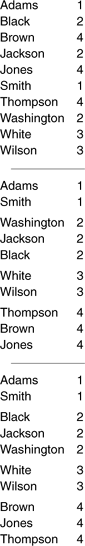

C++ Programming Robert Sedgewick - Princeton University Addison Wesley Professional Algorithms in C++, Parts 1–4: Fundamentals, Data Structure, Sorting, Searching, Third Edition C++ Programming Robert Sedgewick - Princeton University Addison Wesley Professional Algorithms in C++, Parts 1–4: Fundamentals, Data Structure, Sorting, Searching, Third Edition
6.1. Rules of the Game
Before considering specific algorithms, we will find it useful to discuss general terminology and basic assumptions for sorting algorithms. We shall be considering methods of sorting files of items containing keys. All these concepts are natural abstractions in modern programming environments. The keys, which are only part (often a small part) of the items, are used to control the sort. The objective of the sorting method is to rearrange the items such that their keys are ordered according to some well-defined ordering rule (usually numerical or alphabetical order). Specific characteristics of the keys and the items can vary widely across applications, but the abstract notion of putting keys and associated information into order is what characterizes the sorting problem.
If the file to be sorted will fit into memory, then the sorting method is called internal. Sorting files from tape or disk is called external sorting. The main difference between the two is that an internal sort can access any item easily whereas an external sort must access items sequentially, or at least in large blocks. We shall look at a few external sorts in Chapter 11, but most of the algorithms that we consider are internal sorts.
We shall consider both arrays and linked lists. The problem of sorting arrays and the problem of sorting linked lists are both of interest: during the development of our algorithms, we shall also encounter some basic tasks that are best suited for sequential allocation, and other tasks that are best suited for linked allocation. Some of the classical methods are sufficiently abstract that they can be implemented efficiently for either arrays or linked lists; others are particularly well suited to one or the other. Other types of access restrictions are also sometimes of interest.
We begin by focusing on array sorting. Program 6.1 illustrates many of the conventions that we shall use in our implementations. It consists of a driver program that fills an array by reading integers from standard input or generating random ones (as dictated by an integer argument); then calls a sort function to put the integers in the array in order; then prints out the sorted result.
Program 6.1. Example of array sort with driver program|
This program illustrates our conventions for implementing basic array sorts. The main function is a driver that initializes an array of integers (either with random values or from standard input), calls a sort function to sort that array, then prints out the ordered result.
Templates allow the implementation to be used to sort items of any data type for which comparison and assignment are defined. The sort function here is a version of insertion sort (see Section 6.3 for a detailed description, an example, and an improved implementation). It uses a template function that compares two items and exchanges them if necessary to make the second not < than the first.
We can change the driver to sort any type of data for which operator< is defined without modifying sort at all (see Section 6.7).
#include <iostream.h>
#include <stdlib.h>
template <class Item>
void exch(Item &A, Item &B)
{ Item t = A ; A = B; B = t; }
template <class Item>
void compexch(Item &A, Item &B)
{ if (B < A) exch(A, B); }
template <class Item>
void sort(Item a[], int l, int r)
{ for (int i = l+1; i <= r; i++)
for (int j = i; j > l; j--)
compexch(a[j-1], a[j]);
}
int main(int argc, char *argv[])
{ int i, N = atoi(argv[1]), sw = atoi(argv[2]);
int *a = new int[N];
if (sw)
for (i = 0; i < N; i++)
a[i] = 1000*(1.0*rand()/RAND_MAX);
else
{ N = 0; while (cin >> a[N]) N++; }
sort(a, 0, N-1);
for (i = 0; i < N; i++) cout << a[i] << " ";
cout << endl;
}
|
As we know from Chapters 3 and 4, there are numerous mechanisms available to us to arrange for our sort implementations to be useful for other types of data. We shall discuss the use of such mechanisms in detail in Section 6.7. The sort function in Program 6.1 is a templatized implementation, referring to the items being sorted only through its first argument and a few simple operations on the data. As usual, this approach allows us to use the same code to sort other types of items. For example, if the code for generating, storing, and printing random keys in the function main in Program 6.1 were changed to process floating-point numbers instead of integers, we would not have to change sort at all. To provide such flexibility (while at the same time explicitly identifying those variables that hold items) our sort implementations will be parameterized to operate on the data type Item. For the moment, we can think of Item as int or float; in Section 6.7, we shall consider in detail data-type implementations that allow us to use our sort implementations for arbitrary items with floating-point numbers, strings, and other different types of keys, using mechanisms discussed in Chapters 3 and 4.
We can substitute for sort any of the array-sort implementations from this chapter, or from Chapters 7 through 10. They all assume that items of type Item are to be sorted, and they all take three arguments: the array, and the left and right bounds of the subarray to be sorted. They also all rely on operator< to compare keys in items and exch or compexch to exchange items. To differentiate sorting methods, we give our various sort routines different names. It is a simple matter to rename one of them, to change the driver, or to use function pointers to switch algorithms in a client program such as Program 6.1 without having to change any code in the sort implementation.
These conventions will allow us to examine natural and concise implementations of many array-sorting algorithms. In Sections 6.7 and 6.8, we shall consider a driver that illustrates how to use the implementations in more general contexts, and numerous data type implementations. Although we are ever mindful of such packaging considerations, our focus will be on algorithmic issues, to which we now turn.
The example sort function in Program 6.1 is a variant of insertion sort, which we shall consider in detail in Section 6.3. Because it uses only compare–exchange operations, it is an example of a nonadaptive sort: The sequence of operations that it performs is independent of the order of the data. By contrast, an adaptive sort is one that performs different sequences of operations, depending on the outcomes of comparisons (invocations of operator<). Nonadaptive sorts are interesting because they are well suited for hardware implementation (see Chapter 11), but most of the general-purpose sorts that we consider are adaptive.
As usual, the primary performance parameter of interest is the running time of our sorting algorithms. The selection-sort, insertion-sort, and bubble-sort methods that we discuss in Sections 6.2 through 6.4 all require time proportional to N2 to sort N items, as discussed in Section 6.5. The more advanced methods that we discuss in Chapters 7 through 10 can sort N items in time proportional to N log N, but they are not always as good as the methods considered here for small N and in certain other special situations. In Section 6.6, we shall look at a more advanced method (shellsort) that can run in time proportional to N3/2 or less, and, in Section 6.10, we shall see a specialized method (key-indexed sorting) that runs in time proportional to N for certain types of keys.
The analytic results described in the previous paragraph all follow from enumerating the basic operations (comparisons and exchanges) that the algorithms perform. As discussed in Section 2.2, we also must consider the costs of the operations, and we generally find it worthwhile to focus on the most frequently executed operations (the inner loop of the algorithm). Our goal is to develop efficient and reasonable implementations of efficient algorithms. In pursuit of this goal, we will not just avoid gratuitous additions to inner loops, but also look for ways to remove instructions from inner loops when possible. Generally, the best way to reduce costs in an application is to switch to a more efficient algorithm; the second best way is to tighten the inner loop. We shall consider both options in detail for sorting algorithms.
The amount of extra memory used by a sorting algorithm is the second important factor that we shall consider. Basically, the methods divide into three types: those that sort in place and use no extra memory except perhaps for a small stack or table; those that use a linked-list representation or otherwise refer to data through pointers or array indices, and so need extra memory for N pointers or indices; and those that need enough extra memory to hold another copy of the array to be sorted.
We frequently use sorting methods for items with multiple keys—we may even need to sort one set of items using different keys at different times. In such cases, it may be important for us to be aware whether or not the sorting method that we use has the following property:
Definition 6.1. A sorting method is said to be stable if it preserves the relative order of items with duplicated keys in the file|
For example, if an alphabetized list of students and their year of graduation is sorted by year, a stable method produces a list in which people in the same class are still in alphabetical order, but a nonstable method is likely to produce a list with no vestige of the original alphabetic order. Figure 6.1 shows an example. Often, people who are unfamiliar with stability are surprised by the way an unstable algorithm seems to scramble the data when they first encounter the situation.
A sort of these records might be appropriate on either key. Suppose that they are sorted initially by the first key (top). A nonstable sort on the second key does not preserve the order in records with duplicate keys (center), but a stable sort does preserve the order (bottom).

|
Several (but not all) of the simple sorting methods that we consider in this chapter are stable. On the other hand, many (but not all) of the sophisticated algorithms that we consider in the next several chapters are not. If stability is vital, we can force it by appending a small index to each key before sorting or by lengthening the sort key in some other way. Doing this extra work is tantamount to using both keys for the sort in Figure 6.1; using a stable algorithm would be preferable. It is easy to take stability for granted; actually, few of the sophisticated methods that we see in later chapters achieve stability without using significant extra time or space.
As we have mentioned, sorting programs normally access items in one of two ways: either keys are accessed for comparison, or entire items are accessed to be moved. If the items to be sorted are large, it is wise to avoid shuffling them around by doing an indirect sort: we rearrange not the items themselves, but rather an array of pointers (or indices) such that the first pointer points to the smallest item, the second pointer points to the next smallest item, and so forth. We can keep keys either with the items (if the keys are large) or with the pointers (if the keys are small). We could rearrange the items after the sort, but that is often unnecessary, because we do have the capability to refer to them in sorted order (indirectly). We shall consider indirect sorting in Section 6.8.
|